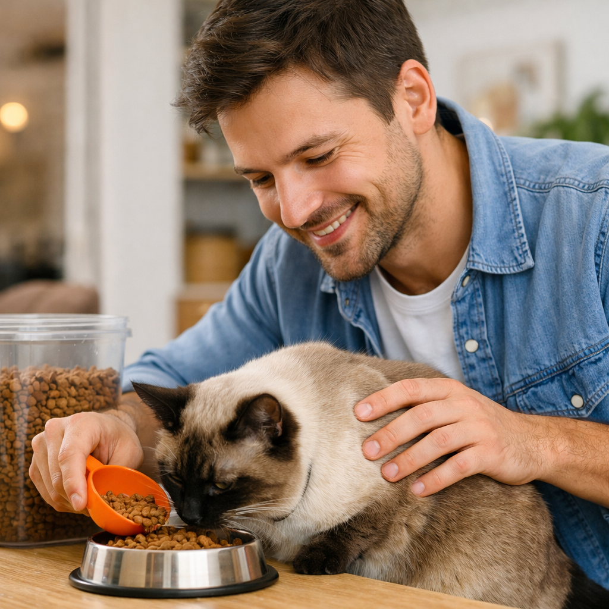
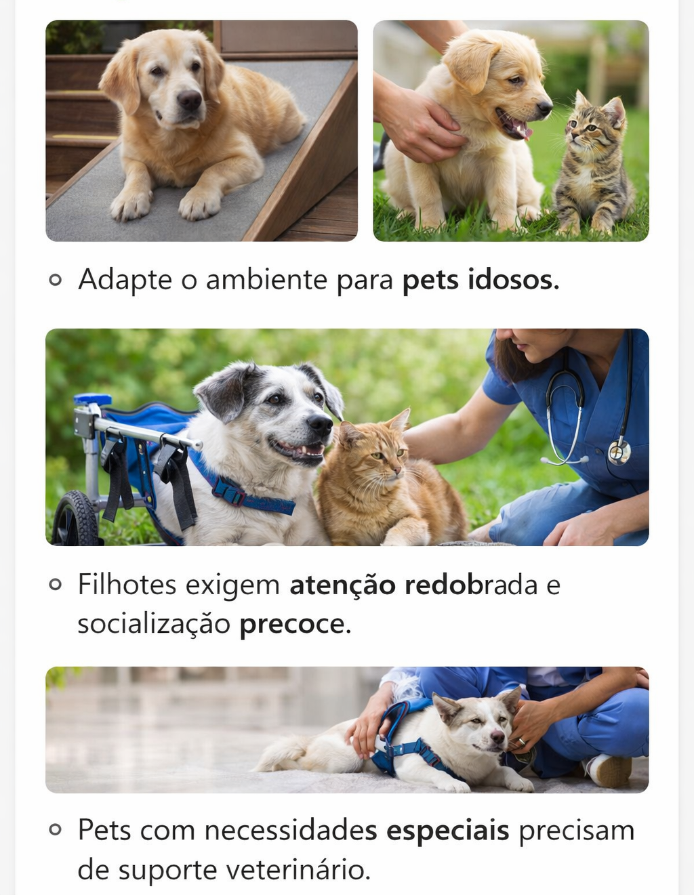

Campanhas Ativas

🐾 Campanha: Alimente o Amor
Milhares de focinhos esperam por um gesto seu. Doe ração. Doe esperança. Juntos, podemos encher potes e corações.
Milhares de focinhos esperam por um gesto seu. Doe ração. Doe esperança. Juntos, podemos encher potes e corações.

Ele vivia nas ruas. Agora vive no coração. Adoções transformam vidas — humanas e caninas.

Espalhe cartazes com foto, nome e telefone. Use redes sociais e grupos locais de proteção animal.
Somos apaixonados por animais e movidos pelo desejo de reunir famílias. Nossa plataforma nasceu com um propósito claro: ajudar na localização de pets perdidos, oferecendo esperança e apoio a quem enfrenta o sofrimento de uma separação inesperada. Aqui, cada latido, miado ou olhar faz diferença. Acreditamos que nenhum animal deve ficar longe de seu lar por falta de informação ou ajuda. Por isso, criamos um espaço onde tutores podem divulgar rapidamente o desaparecimento de seus companheiros, e onde a comunidade pode colaborar ativamente com avistamentos e resgates. Além disso, dedicamos uma área especial à adoção responsável. Sabemos que muitos animais esperam por uma nova chance, por um lar cheio de carinho e cuidado. Se você está pronto para abrir seu coração, nossa seção de adoção conecta você a pets que precisam de uma nova história. Juntos, podemos transformar perdas in reencontros e solidão em novos começos. Seja bem-vindo à nossa rede de cuidado, empatia e amor pelos animais.
Cada compra gera uma doação para cães e gatos resgatados.
Meta: 5 toneladas de ração
Progresso: 3.2 toneladas





Se seu pet ingeriu algo tóxico, procure um veterinário imediatamente.
“Cada clique pode mudar uma vida.”
“Adotar é multiplicar amor.”
“Seu lar pode ser o recomeço de alguém.”
🔴 Desaparecidos | 🟢 Encontrados
Se você representa uma ONG, clínica veterinária, pet shop ou deseja apoiar nossa causa, entre em contato!